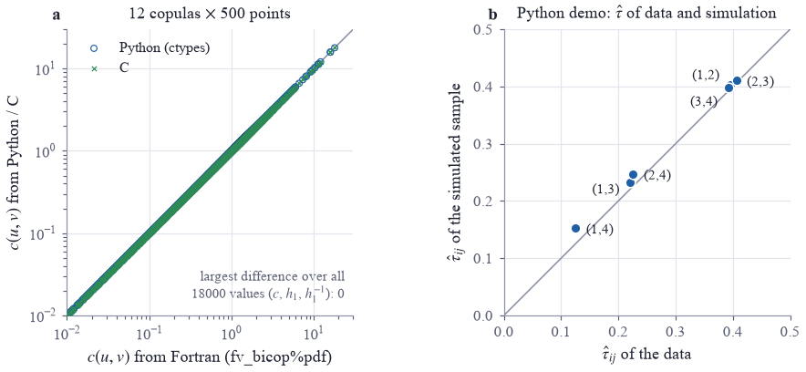

Calling fortvine from Python and C¶
Programs: example/python/fortvine_ctypes.py, example/c/bicop.c ·
Topics: the shared library, the bind(C) interface of src/fortvine.f90, array layout,
ctypes + numpy, linking a C program.
Every computational kernel in src/fortvine.f90 has a C-interoperable entry point
(bind(C, name="fv_...")). bash build.sh links them into the shared library
build/libfortvine.so (Linux), libfortvine.dylib (macOS) or libfortvine.dll
(Windows), which any language with a C foreign-function interface can load. No wrapper
code has to be compiled.
The conventions¶
- Scalars (
integer(c_int),real(c_double)) declared withvalueare passed by value; output scalars (ll,fam,rot,info) are passed by reference. - Arrays are passed by pointer and must be contiguous
double/int32buffers. - Observations are the last Fortran dimension.
u(2, n)for a pair,u(d, n)for a vine: one observation's values are adjacent in memory. In C or numpy that is a row-major array of shape(n, 2)or(n, d), so ordinary C-ordered numpy arrays are passed as they are. - Vine structure arrays
st,fam,rotare Fortran(edge, tree)arrays of sized x d, which in row-major languages are[tree][edge]; parameterspar(3, edge, tree)are[tree][edge][k], i.e. numpy shape(d, d, 3). Indices of trees and edges start at 0 on the C side;orderholds 1-based variable labels. nthreadsis an explicit OpenMP thread count (use 1 or more).
The C prototypes of the routines used below (see the C interface for all of them):
int fv_version(void);
void fv_bicop_eval(int fam, int rot, const double *par, int n, const double *u,
int what, double *out, int nthreads); /* what: 0 logpdf 1 pdf 2 h1 3 h2 4 hinv1 5 hinv2 */
void fv_bicop_fit(int n, const double *u, int fam, int rot, const int *ci,
double *par, double *ll, int nthreads);
void fv_bicop_select(int n, const double *u, int nf, const int *famset, const int *ci,
double psi0, int *fam, int *rot, double *par, double *ll, int nthreads);
double fv_kendall_tau(int n, const double *x, const double *y);
void fv_tau_matrix(int n, int d, const double *x, double *tau, int nthreads);
void fv_pseudo_obs(int n, int d, const double *x, double *u, int nthreads);
void fv_vine_select(int n, int d, const double *u, int nf, const int *famset,
const int *ci, const double *cr, int *order, const int *st_in,
int *st, int *fam, int *rot, double *par, double *edge_ll,
int nthreads, int *info);
void fv_vine_pdf(int nsamp, int bins, int d, int tgt, const double *u, const int *order,
int trunc, const int *st, const int *fam, const int *rot,
const double *par, double *out, int nthreads);
void fv_vine_rosenblatt(int n, int d, const double *u, const int *order, int trunc,
const int *st, const int *fam, const int *rot,
const double *par, double *out, int nthreads);
void fv_vine_inverse_rosenblatt(int n, int d, const double *u, const int *order, int trunc,
const int *st, const int *fam, const int *rot,
const double *par, double *out, int nthreads);
The integer control vector ci mirrors fv_controls:
Index \(j\) of ci[j] |
Meaning | Default |
|---|---|---|
| 0 | selection criterion: 0 log-likelihood, 1 AIC, 2 BIC, 3 mBIC, 4 mBICv | 2 |
| 1 | method: 0 maximum likelihood, 1 inversion of Kendall's \(\tau\) | 0 |
| 2 | preselect families (1 = yes) | 1 |
| 3 | allow rotations (1 = yes) | 1 |
| 4 | fast one-parameter fits (\(\tau\) inversion only) | 0 |
| 5 | \(\tau\) estimator: 0 automatic, 1 exact, 2 approximate | 1 |
| 6 | (vine only) tree criterion: 0 Kendall's \(\tau\), 1 Spearman's \(\rho\), 2 Joe, 3 Hoeffding, ... | 0 |
| 7 | (vine only) spanning-tree algorithm: 0 Prim, 1 Kruskal | 0 |
| 8 | (vine only) truncation level, \(-1\) = none | \(-1\) |
| 9 | (vine only) structure given in order/st_in (1) or to be selected (0) |
0 |
and cr = {threshold, psi0} (default {0, 0.9}).
The C interface covers unweighted, continuous data with the parametric families. Weights,
discrete variables, the nonparametric families and the mBICv-based truncation search are
reached through the Fortran API (fortvine_api).
Python with ctypes¶
"""fortvine_ctypes.py -- call the fortvine shared library from Python (ctypes + numpy).
Build the library first (bash build.sh), then run
python example/python/fortvine_ctypes.py
The library is looked up in build/ next to this repository (or at $FORTVINE_LIB).
Array convention of the C API: observations are the LAST Fortran dimension, i.e. one
observation's values are contiguous. A numpy array of shape (n, k) in C order is exactly
the Fortran array (k, n) the kernels expect -- no transposes, no copies.
"""
import ctypes as ct
import os
import shutil
import sys
from pathlib import Path
import numpy as np
FAMILY = ['indep', 'gaussian', 'student', 'clayton', 'gumbel', 'frank', 'joe', 'bb1', 'bb6', 'bb7',
'bb8', 'tawn', 'plackett', 'fgm', 'amh', 'galambos', 'husler_reiss', 'bb2', 'bb3', 'bb5',
'bb9', 'bb10', 'bb4', 'tev', 'tll', 'bernstein']
def load_library():
root = Path(__file__).resolve().parents[2]
name = {'win32': 'libfortvine.dll', 'darwin': 'libfortvine.dylib'}.get(sys.platform, 'libfortvine.so')
path = Path(os.environ.get('FORTVINE_LIB', root / 'build' / name))
if sys.platform == 'win32':
# the DLL needs the MinGW runtime (libgomp-1.dll, libquadmath-0.dll, libwinpthread-1.dll)
gfortran = shutil.which('gfortran')
if gfortran:
os.add_dll_directory(str(Path(gfortran).parent))
return ct.CDLL(str(path))
lib = load_library()
I, D = ct.c_int, ct.c_double
dptr = np.ctypeslib.ndpointer(dtype=np.float64, flags='C_CONTIGUOUS')
iptr = np.ctypeslib.ndpointer(dtype=np.int32, flags='C_CONTIGUOUS')
Iref, Dref = ct.POINTER(I), ct.POINTER(D)
# signatures of the bind(C) routines in src/fortvine.f90 (scalars by value unless marked out)
lib.fv_version.restype = I
lib.fv_kendall_tau.argtypes = [I, dptr, dptr]
lib.fv_kendall_tau.restype = D
lib.fv_bicop_eval.argtypes = [I, I, dptr, I, dptr, I, dptr, I] # fam, rot, par(3), n, u(n,2), what, out(n), nthreads
lib.fv_bicop_fit.argtypes = [I, dptr, I, I, iptr, dptr, Dref, I] # n, u, fam, rot, ci(6), par(3), ll, nthreads
lib.fv_bicop_select.argtypes = [I, dptr, I, iptr, iptr, D, Iref, Iref, dptr, Dref, I]
lib.fv_pseudo_obs.argtypes = [I, I, dptr, dptr, I] # n, d, x(n,d), out(n,d), nthreads
lib.fv_tau_matrix.argtypes = [I, I, dptr, dptr, I] # n, d, x(n,d), tau(d,d), nthreads
lib.fv_vine_select.argtypes = [I, I, dptr, I, iptr, iptr, dptr, iptr, iptr, iptr, iptr, iptr, dptr, dptr, I, Iref]
lib.fv_vine_pdf.argtypes = [I, I, I, I, dptr, iptr, I, iptr, iptr, iptr, dptr, dptr, I]
lib.fv_vine_inverse_rosenblatt.argtypes = [I, I, dptr, iptr, I, iptr, iptr, iptr, dptr, dptr, I]
for f in (lib.fv_bicop_eval, lib.fv_bicop_fit, lib.fv_bicop_select, lib.fv_pseudo_obs, lib.fv_tau_matrix,
lib.fv_vine_select, lib.fv_vine_pdf, lib.fv_vine_inverse_rosenblatt):
f.restype = None
NTH = 4
# ci(1:6): selection criterion (2 = BIC), method (0 = MLE), preselect, allow rotations,
# fast one-parameter fits, tau estimator (1 = exact) -- the fv_controls defaults
CI6 = np.array([2, 0, 1, 1, 0, 1], dtype=np.int32)
PARAMETRIC = np.arange(23, dtype=np.int32) # families 0..22 (the default set: no tev, tll, bernstein)
def bicop_eval(fam, rot, par, u, what):
"""what: 0 log-density, 1 density, 2 h1, 3 h2, 4 h1 inverse, 5 h2 inverse; u has shape (n, 2)."""
u = np.ascontiguousarray(u, dtype=np.float64)
out = np.empty(len(u))
lib.fv_bicop_eval(fam, rot, np.asarray(par, dtype=np.float64), len(u), u, what, out, NTH)
return out
# ------------------------------------------------------------------------------ one pair
print('fortvine C API version', lib.fv_version())
par = np.array([2.0, 0.0, 0.0]) # Clayton, theta = 2
g = np.array([0.1, 0.5, 0.9])
print('Clayton(2) density on the diagonal:', bicop_eval(3, 0, par, np.column_stack([g, g]), 1).round(4))
rng = np.random.default_rng(1)
n = 2000
u1, w = rng.random(n), rng.random(n)
u2 = bicop_eval(3, 0, par, np.column_stack([u1, w]), 4) # u2 = h1^-1(w | u1)
u = np.column_stack([u1, u2])
print('empirical Kendall tau: %.3f' % lib.fv_kendall_tau(n, u1, u2))
est, ll = np.zeros(3), D()
lib.fv_bicop_fit(n, u, 3, 0, CI6, est, ct.byref(ll), NTH)
print('fitted theta: %.4f log-likelihood: %.2f' % (est[0], ll.value))
fam, rot = I(), I()
lib.fv_bicop_select(n, u, len(PARAMETRIC), PARAMETRIC, CI6, 0.9, ct.byref(fam), ct.byref(rot), est, ct.byref(ll), NTH)
print('selected:', FAMILY[fam.value], 'rotation', rot.value, 'par', est.round(3))
# ------------------------------------------------------------------------------ a vine
# 4-dimensional data with a Gaussian dependence, turned into pseudo-observations
d, n = 4, 3000
corr = 0.6 ** np.abs(np.subtract.outer(np.arange(d), np.arange(d))) # AR(1) correlation
x = rng.multivariate_normal(np.zeros(d), corr, size=n)
u = np.empty((n, d))
lib.fv_pseudo_obs(n, d, x, u, NTH)
# ci(1:10) = CI6, tree criterion (0 tau), tree algorithm (0 Prim), truncation (-1 = none),
# structure given (0 = select it); cr = threshold, psi0
ci10 = np.concatenate([CI6, [0, 0, -1, 0]]).astype(np.int32)
cr = np.array([0.0, 0.9])
order = np.zeros(d, dtype=np.int32)
st_in = np.zeros((d, d), dtype=np.int32)
st, fam, rot = (np.zeros((d, d), dtype=np.int32) for _ in range(3)) # [tree, edge]
vpar, edge_ll = np.zeros((d, d, 3)), np.zeros((d, d)) # [tree, edge, k], [tree, edge]
info = I()
lib.fv_vine_select(n, d, u, len(PARAMETRIC), PARAMETRIC, ci10, cr, order, st_in, st, fam, rot, vpar, edge_ll,
NTH, ct.byref(info))
assert info.value == 0
print('\nvine order:', order)
for t in range(d - 1):
print(' tree %d:' % (t + 1), ', '.join('%s(%.3f)' % (FAMILY[fam[t, e]], vpar[t, e, 0]) for e in range(d - 1 - t)))
trunc = d - 1
dens = np.empty(n) # density: one bin per sample, tgt = -1
lib.fv_vine_pdf(n, 1, d, -1, u, order, trunc, st, fam, rot, vpar, dens, NTH)
print('log-likelihood: %.2f (sum of edge log-likelihoods %.2f)' % (np.log(dens).sum(), edge_ll.sum()))
# simulation = inverse Rosenblatt transform of independent uniforms
sim = np.empty((n, d))
lib.fv_vine_inverse_rosenblatt(n, d, rng.random((n, d)), order, trunc, st, fam, rot, vpar, sim, NTH)
t_data, t_sim = np.empty((d, d)), np.empty((d, d))
lib.fv_tau_matrix(n, d, u, t_data, NTH)
lib.fv_tau_matrix(n, d, sim, t_sim, NTH)
print('Kendall tau, data :', t_data[0].round(3))
print('Kendall tau, simulated :', t_sim[0].round(3))
Run it from the repository root after bash build.sh (it needs numpy):
Output:
fortvine C API version 1
Clayton(2) density on the diagonal: [5.3702 1.481 2.1578]
empirical Kendall tau: 0.485
fitted theta: 1.9290 log-likelihood: 805.75
selected: clayton rotation 0 par [1.929 0. 0. ]
vine order: [1 2 3 4]
tree 1: gaussian(0.582), gaussian(0.595), gaussian(0.574)
tree 2: indep(0.000), indep(0.000)
tree 3: indep(0.000)
log-likelihood: 1865.83 (sum of edge log-likelihoods 1865.83)
Kendall tau, data : [1. 0.395 0.221 0.125]
Kendall tau, simulated : [1. 0.404 0.232 0.152]
What the script does¶
- Loading.
ctypes.CDLLopens the library. On Windows the DLL imports the MinGW runtime DLLs (libgomp-1.dll,libquadmath-0.dll,libwinpthread-1.dll), so the script adds the directory ofgfortranonPATHwithos.add_dll_directoryfirst. - Signatures. Declaring
argtypeswithnumpy.ctypeslib.ndpointer(..., flags='C_CONTIGUOUS')makes ctypes check every array's type and layout, so a wrongly shaped or Fortran-ordered array raises an error instead of producing garbage. - One pair.
fv_bicop_evalwithwhat = 1gives the same Clayton densities as the Fortran pair copula example;what = 4(inverse \(h_1\)) simulates;fv_bicop_fitandfv_bicop_selectfit and select with the default controls. - A vine. Four-dimensional data with the correlation matrix \(0.6^{|i-j|}\) (a Gaussian
AR(1) process) are converted to pseudo-observations by
fv_pseudo_obs, andfv_vine_selectchooses the structure. The answer is the one theory predicts: the Gaussian AR(1) process is Markov, so the D-vine 1-2-3-4 with Gaussian pairs of correlation 0.6 in tree 1 and independence in all higher trees is exact. The estimates 0.57-0.60 match, and BIC sets the three higher edges to independence. - Density and simulation.
fv_vine_pdfwith one bin per sample andtgt = -1returns the ordinary vine density (thebins/tgtarguments serve the fast prediction-grid evaluation ofpdf_grid); its log-sum equals the sum of the edge log-likelihoods returned by the selection.fv_vine_inverse_rosenblattmaps uniform noise to a new sample whose Kendall taus reproduce those of the data. - Truncation.
fv_vine_selectdoes not return a truncation level; with no truncation requested (ci[8] = -1) it isd - 1, the value passed to the other routines.
C¶
/* bicop.c -- one pair copula through the fortvine C API: evaluate, simulate, fit, select.
*
* Build the shared library (bash build.sh), then from the repository root:
* Linux: gcc -O2 example/c/bicop.c -Lbuild -lfortvine -Wl,-rpath,"$PWD/build" -o build/bicop_c
* macOS: gcc -O2 example/c/bicop.c -Lbuild -lfortvine -Wl,-rpath,"$PWD/build" -o build/bicop_c
* Windows (MinGW-w64): gcc -O2 example/c/bicop.c build/libfortvine.dll -o build/bicop_c.exe
*
* Arrays follow the kernels' convention: observations in the last Fortran dimension, so the
* pair (u1, u2) of observation i sits at u[2*i], u[2*i+1] (a row-major n x 2 array).
*/
#include <stdio.h>
#include <stdlib.h>
/* bind(C) routines of src/fortvine.f90 (integer = int, real(c_double) = double) */
int fv_version(void);
void fv_bicop_eval(int fam, int rot, const double *par, int n, const double *u, int what,
double *out, int nthreads);
void fv_bicop_fit(int n, const double *u, int fam, int rot, const int *ci, double *par,
double *ll, int nthreads);
void fv_bicop_select(int n, const double *u, int nf, const int *famset, const int *ci,
double psi0, int *fam, int *rot, double *par, double *ll, int nthreads);
double fv_kendall_tau(int n, const double *x, const double *y);
enum { CLAYTON = 3, N = 2000, NTH = 4 };
enum { LOGPDF = 0, PDF = 1, HFUNC1 = 2, HFUNC2 = 3, HINV1 = 4, HINV2 = 5 };
/* uniform in (0, 1) from a 64-bit xorshift generator (deterministic) */
static double unif(unsigned long long *s) {
*s ^= *s << 13; *s ^= *s >> 7; *s ^= *s << 17;
return ((*s >> 11) + 0.5) / 9007199254740992.0;
}
int main(void) {
static const char *name[] = {"indep", "gaussian", "student", "clayton", "gumbel", "frank",
"joe", "bb1", "bb6", "bb7", "bb8", "tawn", "plackett", "fgm", "amh", "galambos",
"husler_reiss", "bb2", "bb3", "bb5", "bb9", "bb10", "bb4"};
/* ci: criterion (2 BIC), method (0 MLE), preselect, rotations, fast fits, exact tau */
const int ci[6] = {2, 0, 1, 1, 0, 1};
double par[3] = {2.0, 0.0, 0.0}, est[3], ll, diag[6] = {0.1, 0.1, 0.5, 0.5, 0.9, 0.9}, dens[3];
double *uw = malloc(2 * N * sizeof *uw), *u = malloc(2 * N * sizeof *u), *v = malloc(N * sizeof *v);
double *x = malloc(N * sizeof *x), *y = malloc(N * sizeof *y);
int famset[23], fam, rot, i;
unsigned long long seed = 88172645463325252ULL;
printf("fortvine C API version %d\n", fv_version());
fv_bicop_eval(CLAYTON, 0, par, 3, diag, PDF, dens, 1);
printf("Clayton(2) density on the diagonal: %.4f %.4f %.4f\n", dens[0], dens[1], dens[2]);
/* simulate: u2 = h1^-1(w | u1) for independent uniforms (u1, w) */
for (i = 0; i < N; i++) { uw[2 * i] = unif(&seed); uw[2 * i + 1] = unif(&seed); }
fv_bicop_eval(CLAYTON, 0, par, N, uw, HINV1, v, NTH);
for (i = 0; i < N; i++) {
u[2 * i] = x[i] = uw[2 * i];
u[2 * i + 1] = y[i] = v[i];
}
printf("empirical Kendall tau: %.3f\n", fv_kendall_tau(N, x, y));
fv_bicop_fit(N, u, CLAYTON, 0, ci, est, &ll, NTH);
printf("fitted theta: %.4f log-likelihood: %.2f\n", est[0], ll);
for (i = 0; i < 23; i++) famset[i] = i; /* families 0..22 */
fv_bicop_select(N, u, 23, famset, ci, 0.9, &fam, &rot, est, &ll, NTH);
printf("selected: %s rotation %d par %.3f %.3f %.3f\n", name[fam], rot, est[0], est[1], est[2]);
free(uw); free(u); free(v); free(x); free(y);
return 0;
}
Compile against the shared library and run (from the repository root):
Output:
fortvine C API version 1
Clayton(2) density on the diagonal: 5.3702 1.4810 2.1578
empirical Kendall tau: 0.504
fitted theta: 2.0611 log-likelihood: 879.27
selected: clayton rotation 0 par 2.061 0.000 0.000
The program declares the prototypes itself, so no header file is needed. The pairs are
stored as a row-major n x 2 array (u[2*i], u[2*i+1]), which is the Fortran u(2, n)
the kernel expects. A small xorshift generator makes the run reproducible.
Same numbers in every language¶

Linking statically from C
build/libfortvine.a can also be linked into a C program, but then the Fortran and
OpenMP runtimes must be linked too. The simplest way is to let gfortran drive the
link: gcc -c prog.c && gfortran -fopenmp prog.o build/libfortvine.a -o prog (add
-static on Windows for a self-contained executable). With gcc as the driver, use
gcc -fopenmp prog.o build/libfortvine.a -lgfortran -lquadmath -lm -o prog.